Ya llegó el dark mode: una luna en la parte superior de cada pantalla vuelve las pantallas y ventanas emergentes claras de un carbón cálido, y el arte de tus cartas queda exactamente como se imprimió. Ahora cada instalador también viene en español, con las cartas que tienes en español, y la versión web cambia de idioma con un botón de globo. La parte 5 de la auditoría de reglas trae una nueva ventana de respuesta, la Trophy Room se pliega y se ordena, y los héroes del core, Black Panther y Nebula reciben escaneos nuevos y limpios.
de las 4.312 cartas del conjunto muestran su impresión en español en las compilaciones -ES-. El resto se ve en inglés.
La luna cambia cada pantalla en el momento, sin recargar.
Correcciones de reglas, mando, teléfono, escritorio y campaña, a partir de los reportes de ocho jugadores y de la auditoría.
Auditoría de reglas parte 5, cada corrección con su fuente: RRG 1.8 o una resolución de FFG.
La suite completa de pruebas de extremo a extremo, aprobada en la rama del dark mode.
logros, ahora en categorías plegables que puedes ordenar de cuatro formas.
Spider-Man, Captain Marvel, Black Panther y Nebula, además de las cartas de aspecto del core.
Toca la luna en la parte superior de cualquier pantalla, o activa Settings ▸ Display ▸ Dark mode. Las pantallas de pergamino y de papel bajan a un carbón cálido, el texto de tinta se vuelve crema y todos los tonos se quedan como están: el rojo de héroe, los colores de aspecto, las etiquetas de estado. El arte y las caras de las cartas nunca se recolorean.
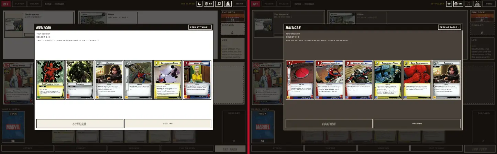
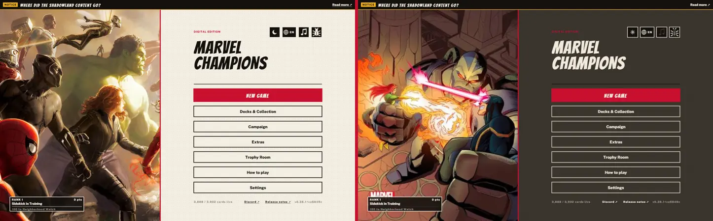
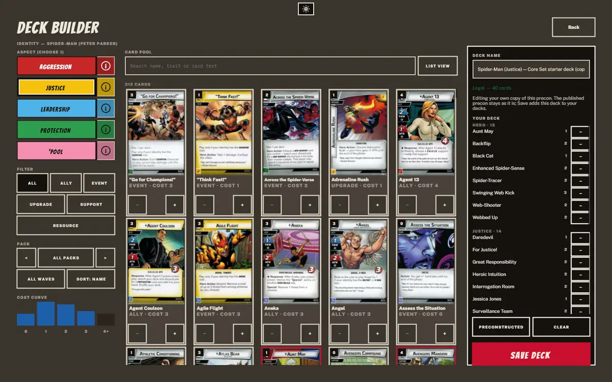
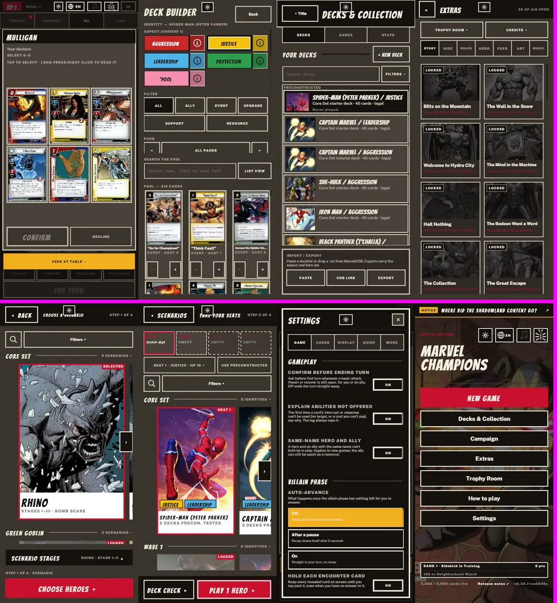
¡Ya puedes jugar con tus cartas en español! Desde esta versión, cada instalador y el APK se publican dos veces: en inglés (-EN-) y en español (-ES-). Las versiones en español muestran la impresión española de cada carta que la tiene: 4.053 de las 4.312 cartas. Las demás se ven en inglés.
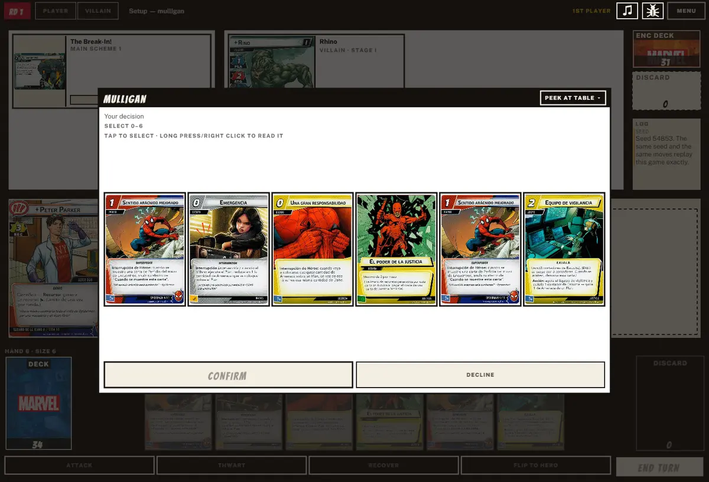
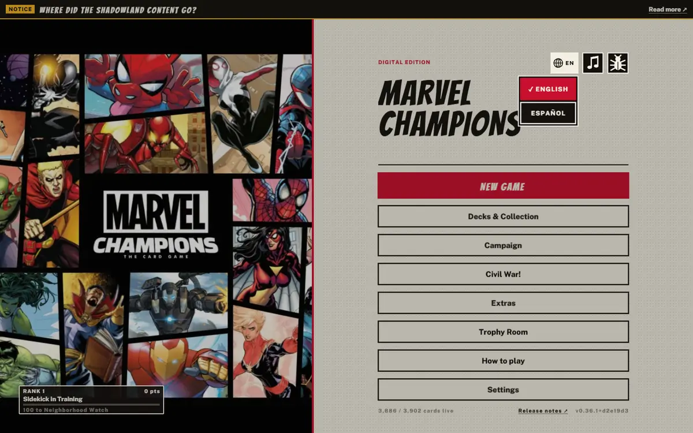
Los escaneos en español son de mc-ocr, de alaintxu, que nos dio permiso para usarlos. ¡Muchas gracias, alaintxu!
Lo pidió ★@AntonioAPG. ¡Gracias por la idea!
¿Encontraste un error? El formulario de reportes ahora pregunta en qué idioma jugabas, y el reporte desde el juego lo rellena solo.
Lo que viene: el texto del juego, el texto de las cartas y las reglas en español (#390, #391 y #392).
@bluefireF5ran sigue repasando la RRG 1.8 y las resoluciones de FFG, una corrección por commit, cada una con su fuente. El cambio más grande es cómo se abren las respuestas: las respuestas a una frase ahora esperan a que se resuelva la frase entera, y luego se abren como una sola ventana donde las ordenas libremente.
Gamma Blast de Spectrum inflige sus 7 de daño antes de la respuesta de la forma de energía, así que un enemigo tough lo bloquea. Photon Speed funciona igual. Cuando respuestas a distintas condiciones comparten una ventana, la hoja ahora dice a cuál responden, y una respuesta opcional ofrecida antes que las forzadas dice Not now: se te preguntará de nuevo cuando se resuelvan las forzadas.
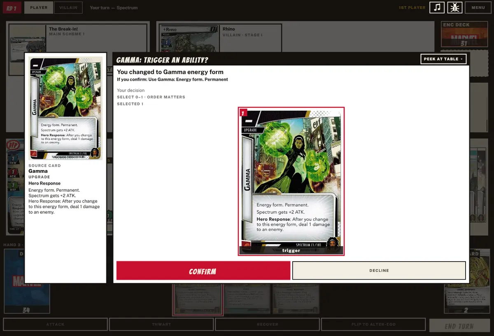
Rellenar hasta el tamaño de mano roba una carta a la vez, así que Shapeshifter Surprise o una obligación robada se resuelve antes de la siguiente carta. El resumen de la fase de villano sigue contando todo el robo.
Las cartas The Power Of ya no duplican sus recursos al pagar de más por los aliados Ant-Man o Wasp.
Ready for a Fight lleva a un héroe con dos formas de héroe a la otra, y Bodyslide se lo permite. El registro ahora nombra la cara: "You changed to Giant Wasp."
Frenemies retira las dos amenazas a la vez, así que un icono de crisis sigue protegiendo el plan principal.
Wolverine's Claws da piercing solo al primer ataque del evento jugado.
I've Been Waiting For This! como potenciación: el villano ejecuta su plan después de que el ataque potenciado y sus respuestas terminen.
Cuando un efecto activa a varios enemigos, los villanos van antes que los esbirros.
Cada categoría se pliega y se abre con un toque, y todas empiezan plegadas. Una barra Filters ordena por categoría, avance, puntos o A–Z, en cualquier sentido, con Expand all y Collapse all. La sala recuerda cuáles abriste.
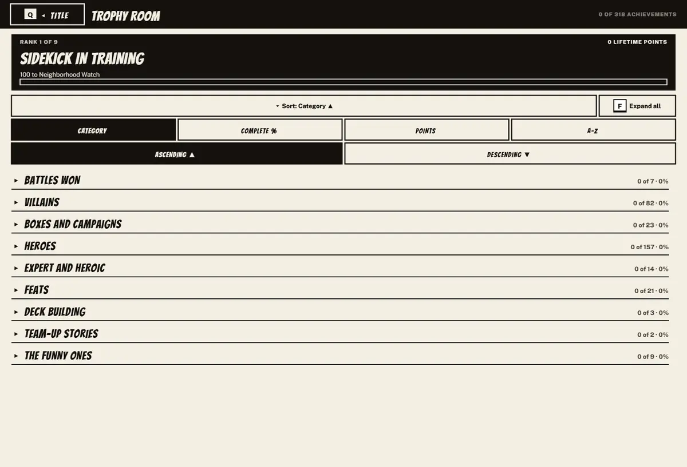
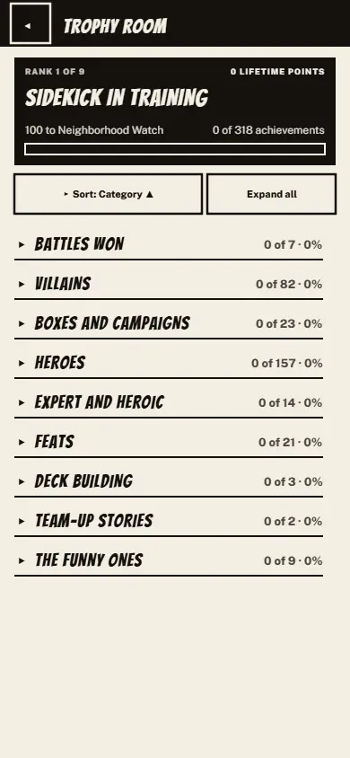
Un toque rápido lateral sigue deslizándose después de levantar el dedo, en las estanterías de héroes y de escenarios, como ya lo hacía el desplazamiento vertical.
El gesto de volver retrocede una pantalla. El gesto de volver de Android, el Back de un navegador y el botón de retroceso de un ratón ahora cierran lo que esté abierto, o abren Pause en una partida, en lugar de cerrar la app.
El menú del título también se desplaza en una ventana demasiado corta para él, como un teléfono en horizontal.
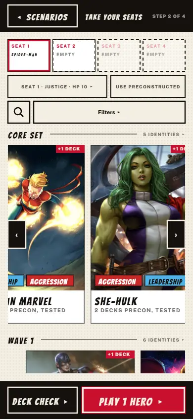
En una ventana ancha, el conjunto de cartas añade columnas a medida que crece, y el hover de carta siempre agranda la carta, al menos 1.5 veces su tamaño en pantalla.
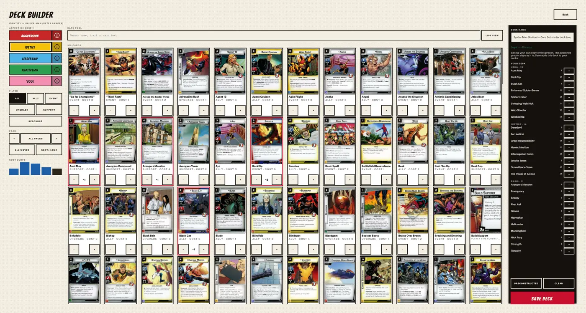
Una carta vinculada a un entorno ahora se muestra en la ficha del entorno, así que puedes usar su habilidad, como gastar para descartar Upgraded Drones.
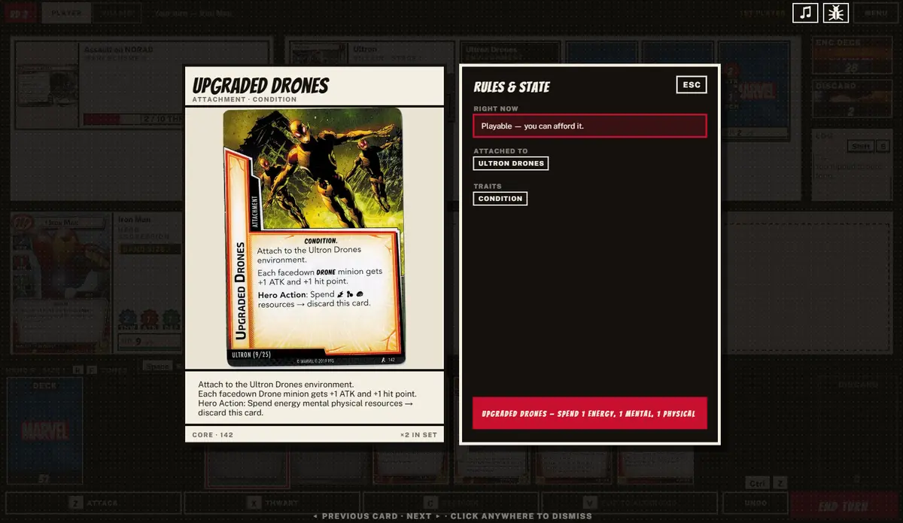
En The Rise of Red Skull, tras vencer a Zola con Hydra Prison fuera de juego, cada héroe en forma de héroe puede voltear a su lado Improved la mejora Basic que tomó después de Absorbing Man. El juego solía ofrecer cada carta Condition del mazo del primer héroe. Ahora a cada héroe solo se le ofrece su propia mejora, un héroe a la vez, con una opción Keep it Basic.
La misma corrección da a cada héroe su propia columna para la recompensa Planning Ahead de Sinister Motives.
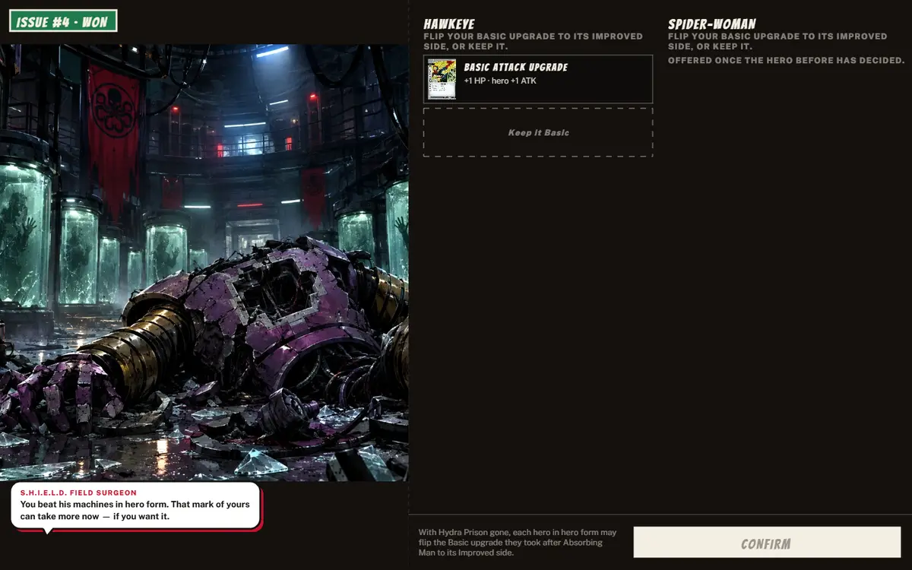
En un Steam Deck, LB/RB y el D-pad no llegaban al villano, los planes, los esbirros ni las vinculadas, así que Y no tenía nada que inspeccionar ahí. Ahora cada carta de la mesa es una parada: LB/RB saltan a la zona del villano, el D-pad se mueve entre el villano, los planes y los esbirros, y Y inspecciona (mantén para ampliar).
A sobre una carta sin nada que usar la abre en Inspect, como un toque. En un teléfono, RB cambia a la pestaña Enemies o Threat y se queda ahí.
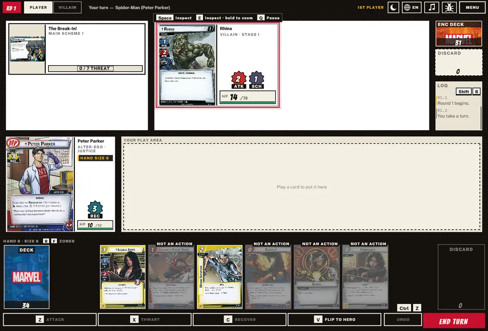
Más cartas ahora usan mis propios escaneos: rectos, nítidos y sin marca de agua. La carta torcida de Captain Marvel con una pestaña blanca, reportada por @neopolii, desapareció.
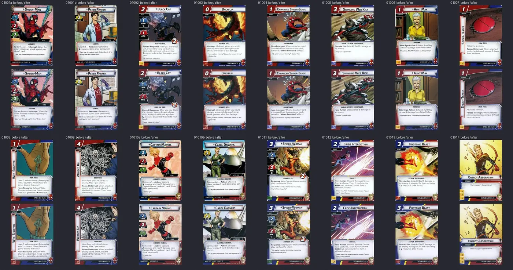
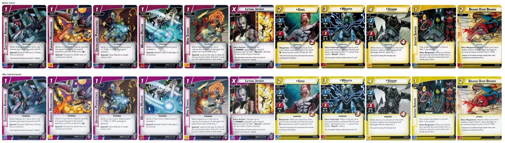
Cada reporte de aquí vino de un jugador que se tomó un minuto para avisarnos. Sigue enviándolos desde Pause ▸ Report a problem, un issue de GitHub o el Discord de la comunidad.
Reportó #478, #479 y #480: el toque rápido en la estantería, la Trophy Room y el gesto de volver.
Escribió #410, la parte 5 de la auditoría de reglas, con una fuente para cada corrección.
Pidió el dark mode en #459, y reportó #458 y #485: el deck builder ancho y la carta torcida de Captain Marvel.
Pidió las cartas en español en #337.
Reportó #462, Upgraded Drones.
Reportó #496, la mejora Basic que se ofrecía tras Zola.
Reportó en Discord que un mando no podía llegar al villano ni a los planes (#503).
Reportó el mismo error del mando en #506.
Hizo los escaneos de cartas en español de mc-ocr y nos dejó usarlos.
integrados en main.
La mayoría son contenido multimedia que sale de git hacia los paquetes de la versión.
Solo el dark mode son 1,083.
en los mismos pull requests.